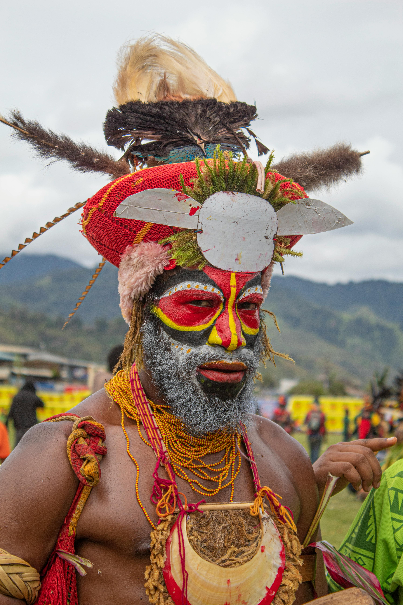
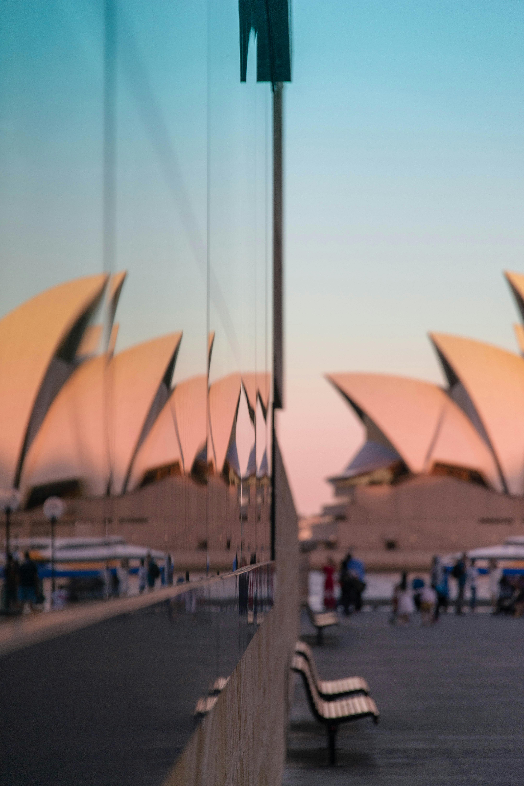
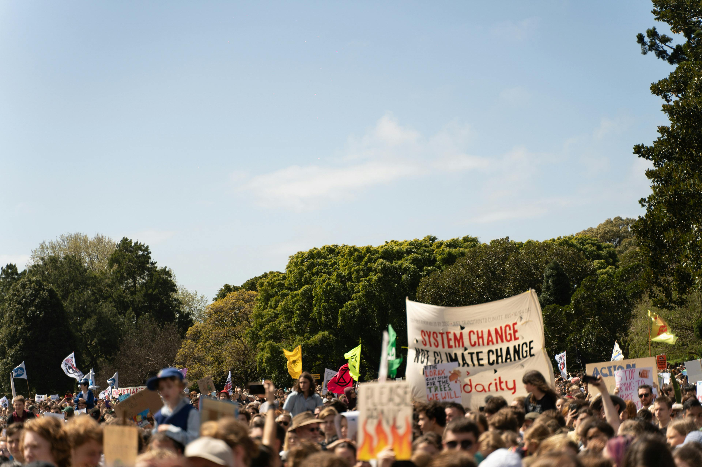

The Pacific Islands, home to the world’s most diverse range of indigenous cultures, preserve many ancestral traditions due to historical isolation and colonial neglect. Despite a population of fewer than 6.5 million, Oceania boasts remarkable cultural and ecological diversity, with Papua New Guinea alone accounting for about one-third of the world’s languages. Spread across varied environments, from Papua New Guinea’s mountains to urban centers like Auckland, most Pacific Islanders live in Melanesia’s rural, land-rich states, while many Micronesians and Polynesians reside in cities or migrate to metropolitan areas in Australia, New Zealand, and the U.S. Oceania faces significant cultural threats from global political and economic pressures.
Select a dropdown below to learn more about Oceania's Culture!
Oceanic cultures face unique political influences, with indigenous peoples often maintaining majority status in their homelands, unlike typical marginalized societies. In Melanesia, postcolonial independence brought governance by indigenous elites, but cultural identity remains a point of contention, as seen in Bougainville’s rebellion against Papua New Guinea and Fiji’s military government invoking cultural values to justify discriminatory policies. Meanwhile, Christianity, once resisted, has become deeply integrated into Oceanic traditions and political narratives.
Economic dependence heavily impacts the region, with foreign companies exploiting natural resources and governments turning to tourism and development to sustain economies. Military ambitions of global powers, especially the United States, have transformed parts of Oceania into bases and test sites, exemplified by nuclear testing in the Marshall Islands. These activities have displaced communities, disrupted cultural identities, and created social problems despite compensatory efforts.
Land remains central to cultural identity, yet population growth, militarization, and resource exploitation threaten traditional practices. However, there are positive steps toward recognizing indigenous land rights, such as Australia’s acknowledgment of Aboriginal land ownership and New Zealand’s Waitangi Tribunal addressing Maaori claims. Efforts in Melanesia to codify customary land rights also reflect growing respect for traditional governance and cultural preservation.
Migration has profoundly influenced Oceania, with Islanders continuing their ancestors' tradition of travel. Initially driven by curiosity during early European exploration, migration has become essential in the modern era as global economic integration affects island states. Within the Pacific, land competition and opportunities for education and work push many toward urban centers like Port Moresby, where overcrowding and social issues like youth gangs have emerged. Some migration is temporary, but many relocate permanently, creating challenges for governments to provide services and employment in growing cities.
Beyond the Pacific, significant numbers of Islanders have settled in Pacific Rim nations, with Auckland becoming the largest Polynesian city. Migration within Oceania, such as to Guam, or further afield to Australia, the U.S., and Canada, can cause political tensions as migrants compete with local populations for resources. Despite restrictive immigration policies in some host countries, migration remains a critical outlet for island states dealing with rapid population growth and limited economic development, with remittances forming a significant part of their economies.
Migration reshapes traditional kinship and family structures, especially for those settling abroad. In some cases, indigenous populations have become minorities in their own lands, as in Saipan. Yet, many migrant communities maintain their cultural identity through strong church organizations and practices like Honolulu's Tongan credit associations. These adaptations reflect the balance between integrating into new environments and preserving island traditions.
Many Pacific Islands, while beautiful, possess few economic resources and rely heavily on external funding for development. However, the strategic importance of these islands has driven donor generosity, which may decline in the post-Cold War era. Despite some subsistence economies, island states are striving for sustainable development, but limited resources and the challenges posed by vast ocean distances often restrict their options. Economic interests, rather than cultural and social consequences, often dominate decision-making, leading to conflicts between urban elites and rural landowners when it comes to resource exploitation.
Economic pressures in Oceania lead to environmental degradation in some regions. For example, New Caledonia continues nickel mining despite pollution, while Papua New Guinea allows copper and gold mining that harms both rivers and public health. Overseas companies exploit local hardwoods, and concerns remain about nuclear waste dumping in the Pacific. These economic activities, while providing income, threaten the environment and indigenous lifestyles, leading some islanders to oppose them.
Tourism has become a major industry in the Pacific, turning islands into commodities by capitalizing on their beauty and culture. While tourism can bring economic benefits and opportunities for cultural exchange, it also presents challenges. It can damage the environment, create low-wage service jobs, and distort traditional arts. Some Pacific nations are trying to manage tourism in ways that protect indigenous cultures and the environment. Meanwhile, the spread of technology like television and video has introduced global influences, altering how indigenous peoples interact with the world and raising concerns about cultural preservation.
